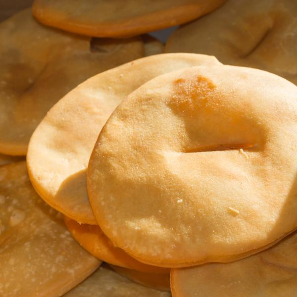

Receta para tortas fritas criollas

Esta receta súper argentina, con pocos ingredientes y muy fácil de hacer, es ideal para comer en los días de lluvia, aunque se disfrutan en cualquier momento
Ingredientes
- 1/2 kg de harina
- 4 cucharadas de grasa o manteca
- 1/2 taza de agua
- 2 cucharaditas de sal
- Aceite o grasa de vaca para freír
Preparacion
- Poner en un bol la harina cernida y colocar en el centro la grasa a temperatura ambiente.
- Con la punta de los dedos ir tomando la masa, agregando de a poco el agua con la sal y seguir hasta formar un bollo.
- Amasarlo enérgicamente hasta que la masa forme ampollas en su superficie.
- Dejar reposar durante 1 o 2 horas y luego cortar pequeñas pelotitas, achatarlas con la palma de la mano y pincharlas con un tenedor.
- Freírlas enseguida en abundante aceite o grasa muy caliente, retirar con espumadera y colocar sobre papel blanco las torta fritas para que se escurran.